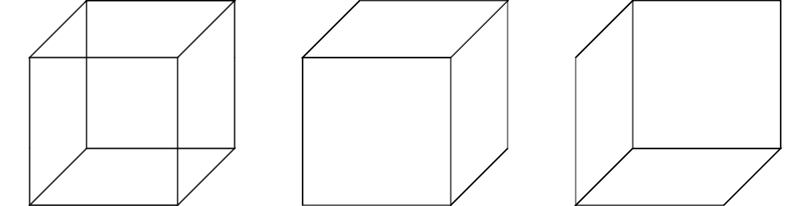
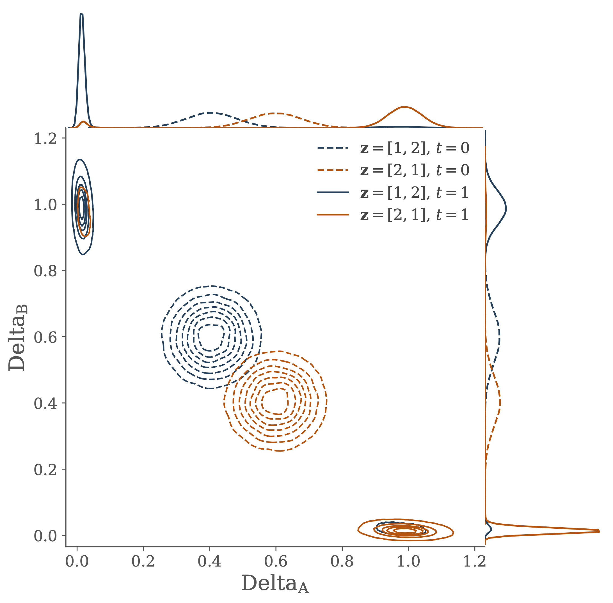
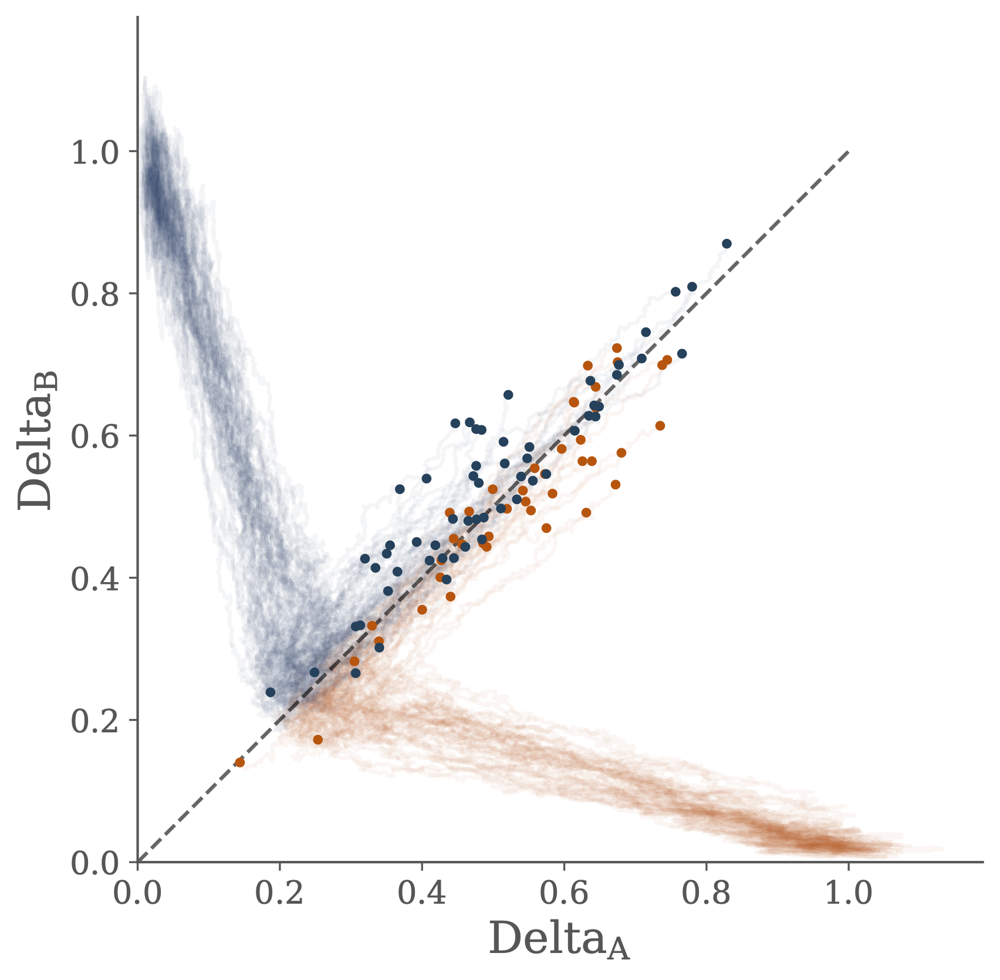

PhD
Summary
The extraordinary complexity of biological systems presents significant obstacles to our attempts at understanding them. My thesis explores some approaches to tackling this complexity with a particular focus on the study of systems in developmental biology.
Developmental systems provide ideal case studies when considering such questions because they exhibit many of the hallmark features of biological complexity. By their very nature these systems are dynamic and their study necessitates consideration of an enormous variety of different processes unfolding at different length scales and levels of organisation.
In order to understand these systems we need to build coherent, general, and interpretable models which are capable of encompassing the multitude of biological processes from which they are constituted. Taking inspiration from influential work in computational neuroscience, I propose some novel approaches for conceptualising and modelling these processes. Support for the utility of these approaches is provided by a series of case-studies in which they are used to analyse some archetypal developmental systems.
An important theme in this work is the relationship between computational and mechanistic perspectives of a processes. This topic is considered in some detail and analysed concretely in the context of a simple model of cell-cell interactions. Some of the lessons learned from this analysis are used to propose a novel method for parameter inference in dynamical models of gene regulatory networks.
Two select projects from this work are briefly introduced in the sections below.
Marr’s Levels in Biology
In the course of his work on the human visual system, the neuroscientist David Marr proposed a framework for the analysis of information processing systems (Marr 1982). Marr argued that in order to understand something complex like the human brain we need to consider different kinds of explanations situated at different levels of description or analysis. Collectively referred to as Marr’s levels of analysis (or levels of understanding), this framework has been hugely influential in neuroscience since its inception in the 1970’s. As Willshaw et al. (2015) put it,
“[Marr’s] methodology gave the intellectual infrastructure within which almost all subsequent modelling has been performed.”
In my thesis I argue that Marr’s ideas have the potential to play an instrumental role in our understanding of complex systems in developmental biology.
In order to introduce these ideas, it is helpful to consider a simple example from the domain of visual perception, illustrated in the figure below. This visual illusion, known as a Necker cube, has the property that when looking at it we can ‘see’ two different, incompatible, 3D cubes (you might even be able to consciously swap between them).

As Marr argues, the most natural explanation for this illusion makes reference to the computational challenge faced by the visual system. Namely, that the input at the retina contains two spatial dimensions and the visual system must use this to infer the 3D structure of the world. In the case of the Necker cube, the two-dimensional representation on the page supports two different, yet equally plausible, 3D shapes. It is this ambiguity which results in the phenomenon of being able to perceive two different cubes.
This type of explanation, which appeals to details of the computational problem that the system is trying to solve, is an example of an explanation at the top level of Marr’s hierarchy, known as the computational level. The subsequent two levels concern the algorithms by which the system solves this computational problem (algorithmic and representational level) and the way in which these algorithms are implemented by the physical hardware of the system (hardware level).
Marr’s hierarchy decomposes the computation that a system performs. In order to apply these ideas in the study of developmental systems we either need to be able to describe the behaviour of these systems in computational terms or develop a more general language with which to frame Marr’s levels. To this end, I propose a generalisation of Marr’s framework which replaces the ideas computation and algorithm with the more broadly applicable concepts of function and strategy. Justification for this move is provided by an analysis of the relationship between the different levels in the hierarchy and the relationship of this framework to scientific models considered more generally.
In order to demonstrate the applicability of these ideas in the context of developmental biology, I present two case-studies in which this type of framework is used to analyse a developmental system.
Integrating Computational and Mechanistic Perspectives in a Simple Model of Cell-Cell Communication
The commensurability of computational and mechanistic perspectives of a biological process is important if we are to take full advantage of the ideas presented in the previous section. Moreover, it is increasingly common to consider the development systems as performing information processing (Tkačik and Gregor 2021) and so it is important to be able to integrate this work with approaches which consider the mechanistic details of the underlying biological processes.
In order to demonstrate how these different perspectives can be productively combined, I consider a simple model of cell-cell communication. In this model a pair of cells must infer their individual positions based on the local concentration of a signalling molecule. By interacting to share information cells are better able to infer their position than if they were to act independently.
The transfer of information from the joint distribution of gene concentration across the two cells into the two marginal distributions of gene concentration in each individual cell is used to shed some light on the ideas of canalization and positional information.


Interactions between the two cells are described by a stochastic differential equation model of the Delta-Notch gene regulatory network. Performance in the information processing task is related to dynamical properties of the model describing the underlying genetic circuit.
Furthermore, by introducing a quantitative measure of the informational processing of the performance allows for a novel approach for using a description of the computation problem faced by the cells to facilitate parameter inference in the mechanistic model of the gene regulatory network.